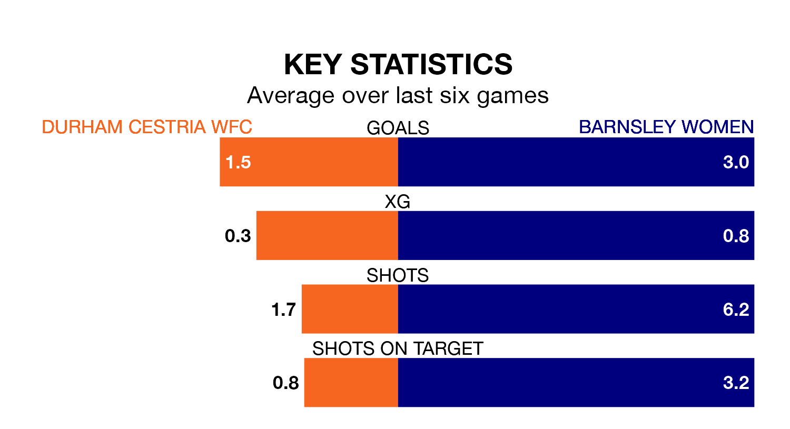

Barnsley Women travel for Sunday's early match against Durham Cestria WFC looking to bounce back from defeat last time out in Women's National League Division One North.
Barnsley, who sit top of the league after 11 games, fell to a 3-0 home defeat to Durham Cestria WFC on January 14.
They face a Durham Cestria WFC side who picked up a win in their last match, a 2-0 victory against Chorley Women, and who sit fifth in the table.
With 28 goals in 11 games so far this season, Barnsley are the league's second-highest scorers with 2.5 goals per game. And they are conceding fewer than average, letting in nine goals at a rate of 0.8 per game.
Durham Cestria WFC, meanwhile, are average scorers, with 1.6 goals per game. They have conceded 0.6 goals per game.
The home side are in reasonable form in Women's National League Division One North, with three wins and two draws from their last six games.
With five wins and one loss over that period, the visitors' form is better – they have taken 15 points from 18, compared to Durham Cestria WFC's 11.
In the last five years, Durham Cestria WFC and Barnsley have played each other on five occasions. Durham Cestria WFC won three of them and Barnsley two.
On average, Durham Cestria WFC scored 2.2 goals and Barnsley 1.4 in those matches.
Their last meeting was on January 14, when Durham Cestria WFC won 3-0 away.
Updated: 10:03 (UTC), 30/01/24